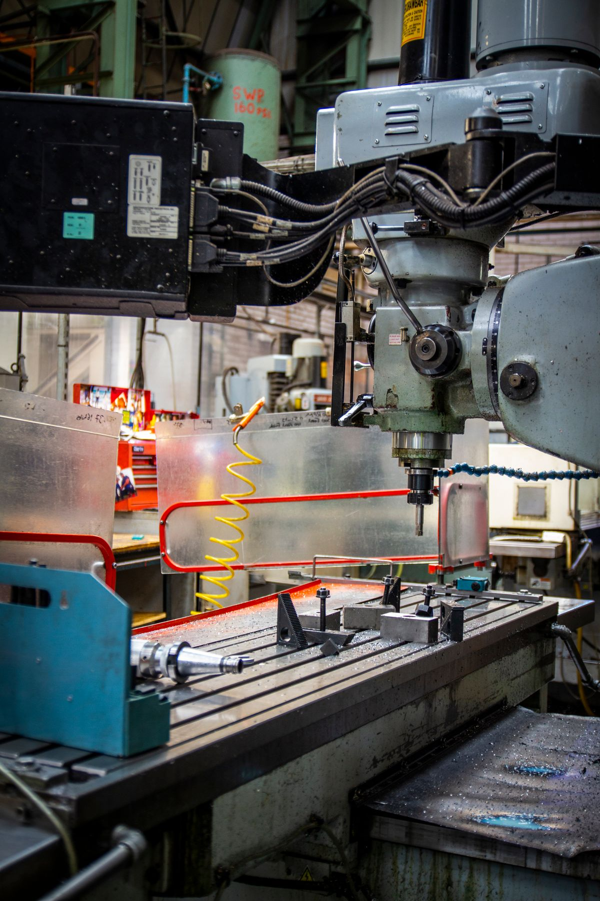
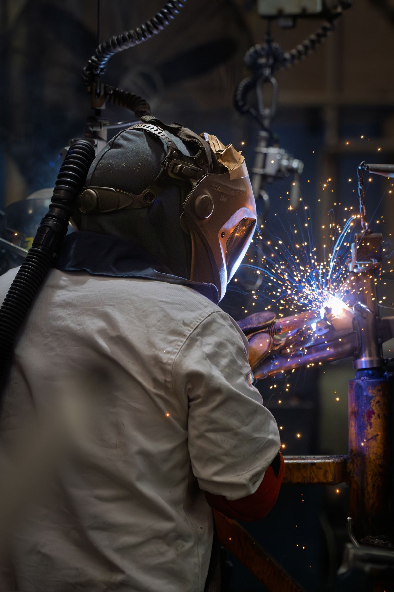
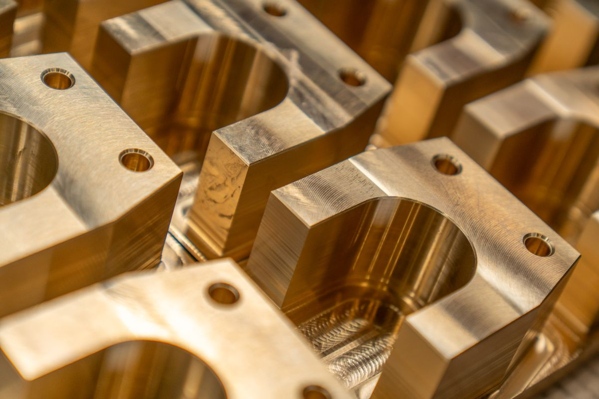
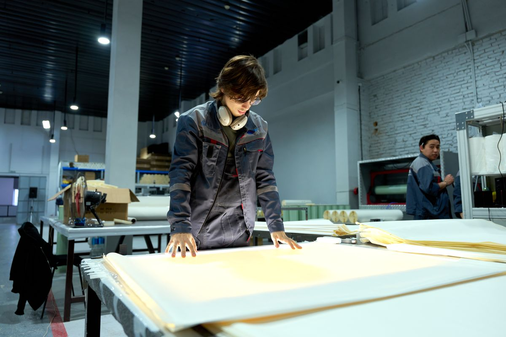

01 / Machining
精密切削加工
CNC旋盤・マシニングセンタを用い、複雑形状の部品も±0.01mm単位の精度で加工します。素材の特性を見極めた治具設計と切削条件の最適化で、難削材にも対応可能です。
- CNC旋盤・マシニングセンタ 各種完備
- アルミ・ステンレス・チタン等 難削材対応
- 試作1個から量産ロットまで対応
Business

01 / Machining
CNC旋盤・マシニングセンタを用い、複雑形状の部品も±0.01mm単位の精度で加工します。素材の特性を見極めた治具設計と切削条件の最適化で、難削材にも対応可能です。

02 / Sheet Metal
レーザー加工機による切断から曲げ、溶接、表面処理まで一貫対応。装置の外装筐体や構造フレームなど、板金ならではの強度と精度が求められる製品を製作します。

03 / Prototyping
図面が固まっていない構想段階からのご相談も歓迎です。材料選定やコストダウンの提案を含め、短納期での試作対応により開発スピードを後押しします。

04 / Quality Control
三次元測定機や各種測定器による全数・抜き取り検査を実施。ISO9001に準拠した工程管理で、加工履歴と検査データをすべてトレースできる体制を整えています。
Industries
幅広い産業分野の精密部品加工に対応しています。
駆動系・電装系部品の精密加工
高精度・高清浄度が求められる部品
生体適合材料を用いた精密部品
駆動部・筐体フレームの製作
Flow
01
図面の有無を問わず、まずはご相談ください。
02
図面・仕様を確認し、納期とお見積りをご提示します。
03
必要に応じて試作を行い、仕様を最終確定します。
04
量産加工を行い、検査工程で品質を確認します。
05
納品後もアフターフォローで安定生産を支えます。